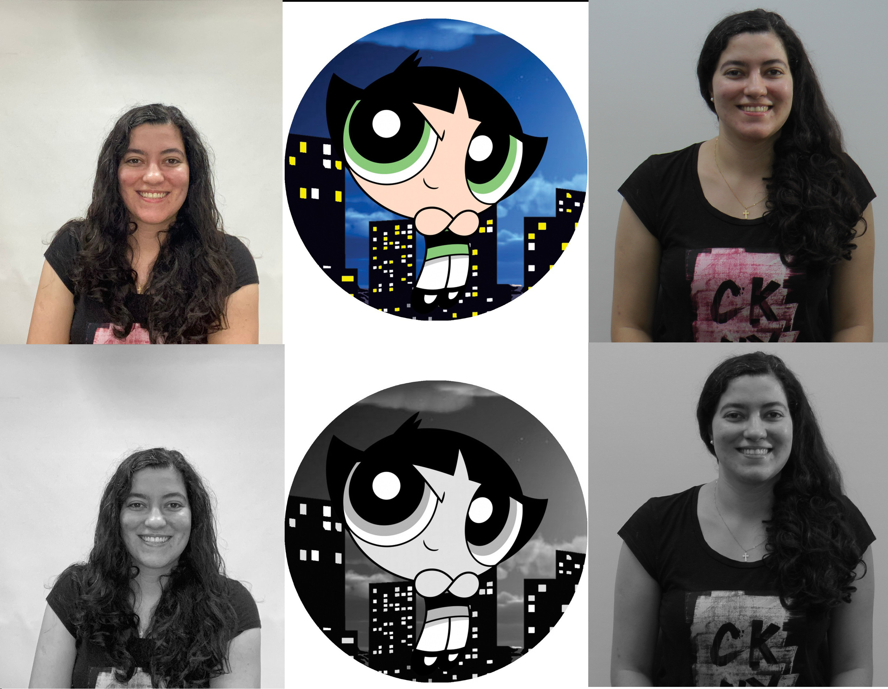

Codificação de Sinais Multimídia - 3º Quadrimestre de 2023
Objetivos:
Esse Laboratório tem como objetivo a captura e visualização de imagens, além de realizar modificações nelas, como em suas cores e resolução. Também tem o objetivo de realizar a gravação de vídeos com diferentes estilos de movimentação.
Procedimentos:
Foram tiradas fotos de cada integrante do grupo, com dois instrumentos de captura de imagem: um celular e uma filmadora semi-profissional. Para ambos foi necessária um cuidado para que houvesse a melhor iluminação possível, utilizando-se anel de luz para as fotos com celular e refletores de LED para as fotos com filmadora.
Para cada foto, do celular e da filmadora, foram modificadas suas resoluções em dois formatos e colocado filtro de cores preta e branca. Além disso, foi adicionado um avatar para cada integrante.
Em suma, os materiais utilizados foram: filmadora semi-profissional, tripé para filmadora, 1 refletor de iluminação de 50W e 5500K, 1 luz de iluminação de LEDs com potência variável, telas difusoras, 1 luz em anel, 1 monitor de vídeo e cabo HDMI.
Lucas Aperguis
Matheus Barison
Juliana dos Santos

Giovanne Campanha
Grupo (celular)
Grupo (filmadora)
Vídeos: Full HD - HD - WVGA
Vídeos: Full HD - HD - WVGA
Análise:
Nesse experimento foi possível comparar dois tipos de mídia, capturados por tecnologias diferentes. Imagens foram capturadas por meio de um aparelho celular modelo Iphone, e por meio de uma filmadora semi-profissional. Para ambos, nota-se que a luz é o elemento essencial para dar maior qualidade à imagem. O anel de luz foi utilizado para a captura de imagens com o celular, enquanto que para a filmadora, utilizou-se os refletores de LED e o guarda-chuva refletor para eliminar sombras.
Nota-se que as imagens feitas pelo celular possuem uma claridade maior. As filmadora possuem sensores maiores, porém geralmente com resolução menor. As lentes das filmadoras são intercambiáveis também, o que permite readequar para determinados objetos alvo, enquanto que o celular possui uma lente fixa, sendo que está sendo comum os aparelhos serem fabricarado com mais de uma lente fotográfica.
Para cada imagem original capturada por meio do celular ou filmadora, foi editada sua coloração, passando para preto e branco, e modificada sua resolução para cerca de 50% e 25% do original. Cada integrante escolheu também seu avatar para realizar os mesmos procedimentos e observou-se que há uma grande diferença nas mudanças de resoluções.
Conclusão:
Por fim, conclui-se que diferentes equipamento impactam diretamente na obtenção de imagens. O celular tem se desenvolvidado cada vez mais e já pode tirar imagens com maior qualidade do que uma câmera profissional. A filmadora tem a capacidade de capturar imagens de profundidade campo mais amplo, enquanto que o celular pode capturar uma profundidade mais rasa. A filmadora também consegue captar maiores detalhes, produz contornos mais definidos e delimitados. A iluminação em anel utilizada para capturar imagem com o celular foi bem determinante também para trazer imagens mais bem iluminadas com o celular, enquanto que os instrumentos de refletor, telas e guarda-chuva são mais complexos para se posicionarem para dar a iluminação correta para a filmadora.